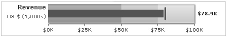

| Bullet Graphs |
A bullet graph is a variation of a bar graph and serves as a replacement for dashboard gauges and meters. Bullet graphs overcome the fundamental issues of gauges and meters which typically require too much space and are cluttered with distracting decoration. The bullet graph features a single, primary measure (for example, current year-to-date revenue), compares that measure to one or more other measures to enrich its meaning (for example, compared to a target) and displays it in the context of qualitative ranges of performance, such as poor, satisfactory and good. Bullet graphs may be oriented horizontally or vertically and multiple graphs may be stacked to allow comparisons of several measures at once. Shown below are bullet graphs that can be created using FusionWidgets: |
|  |
| Horizontal bullet graph |
| Vertical bullet graph |
| Salient features |
|